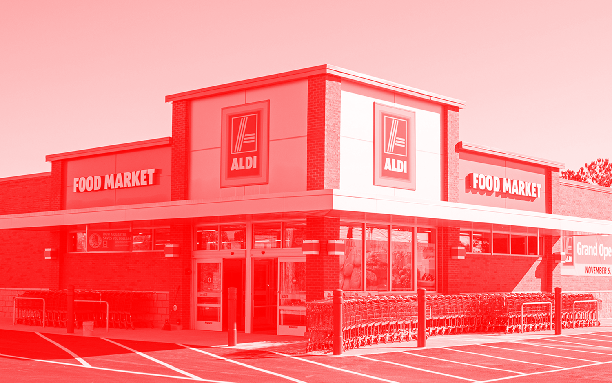
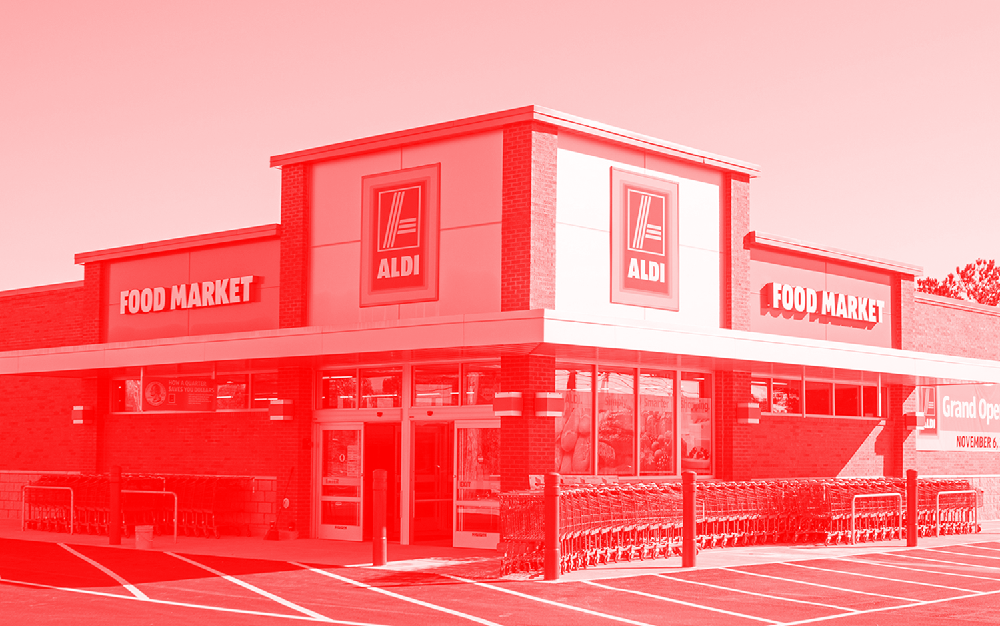
 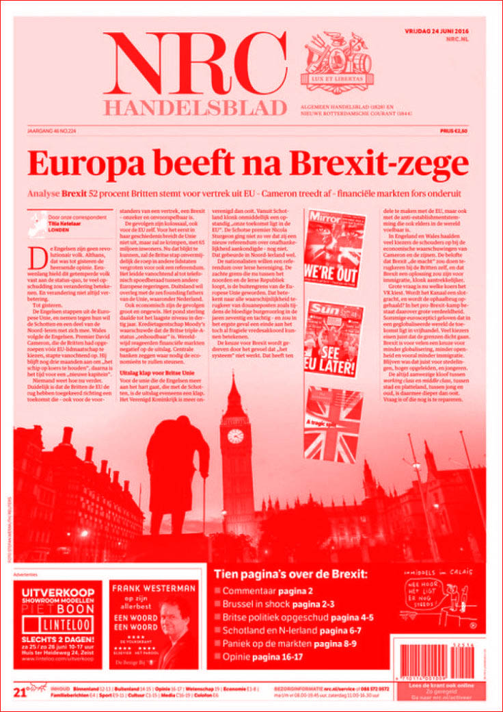
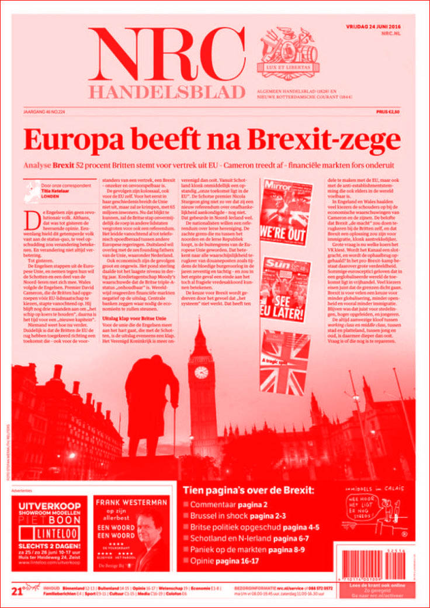

 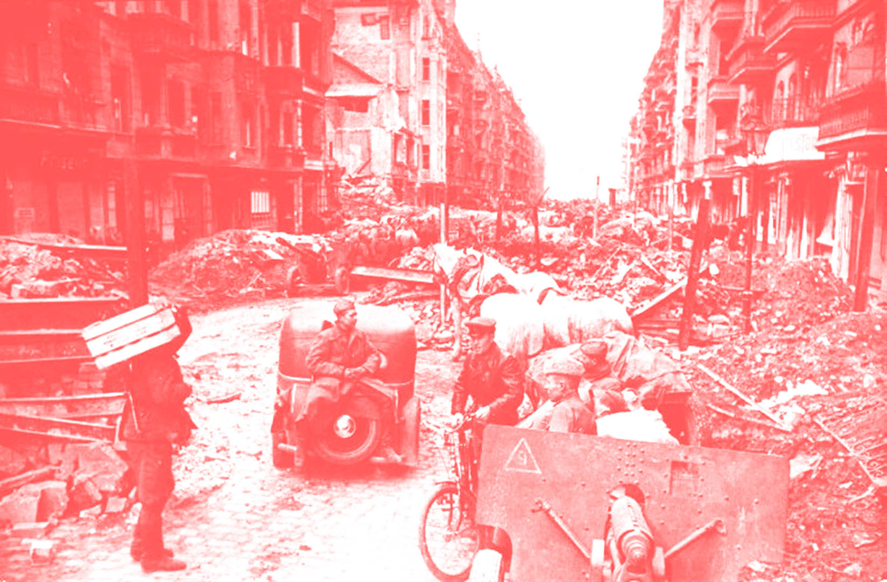
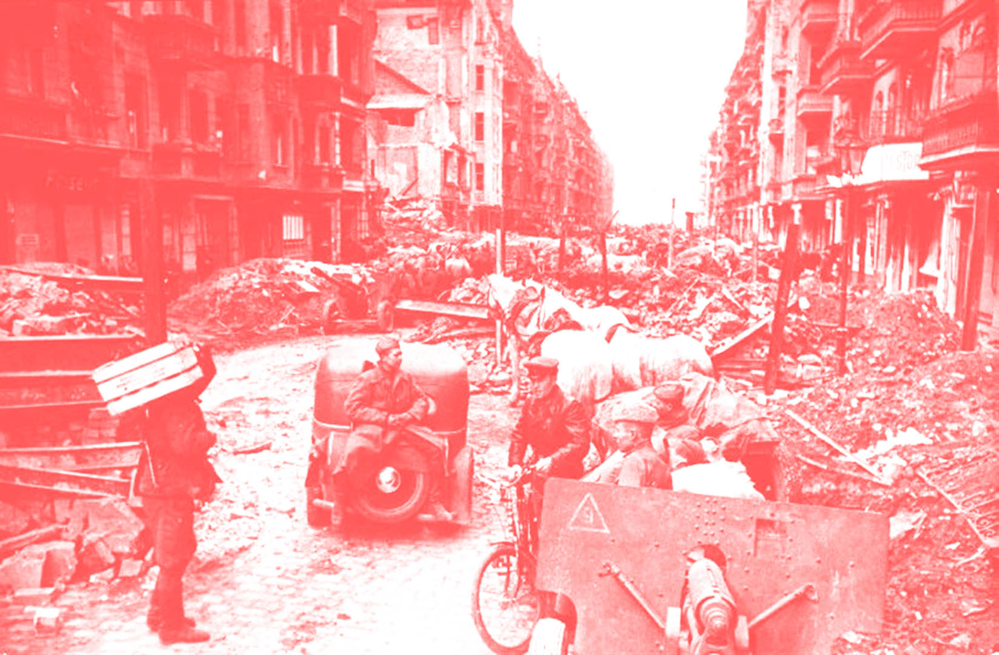
 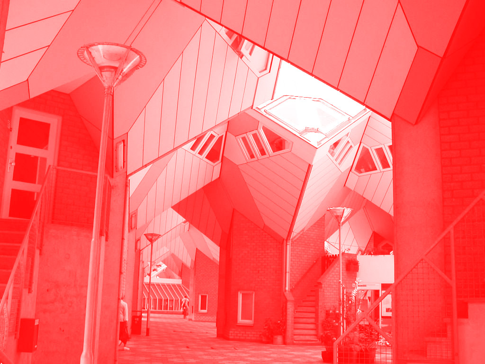
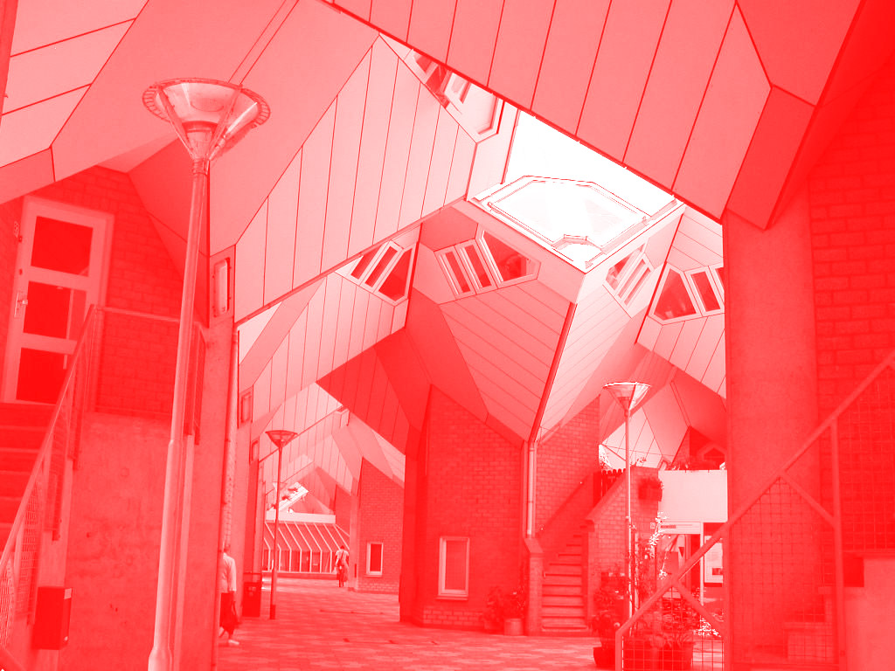


 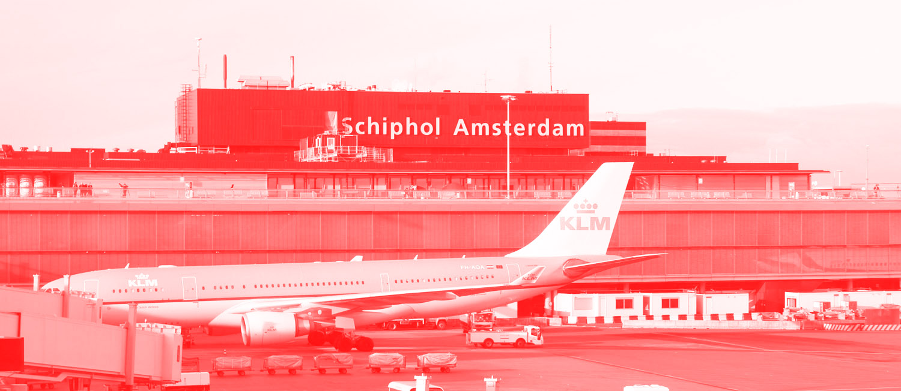
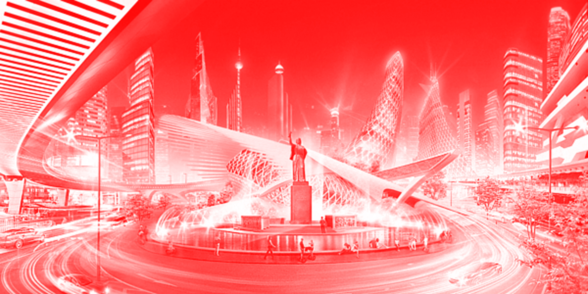
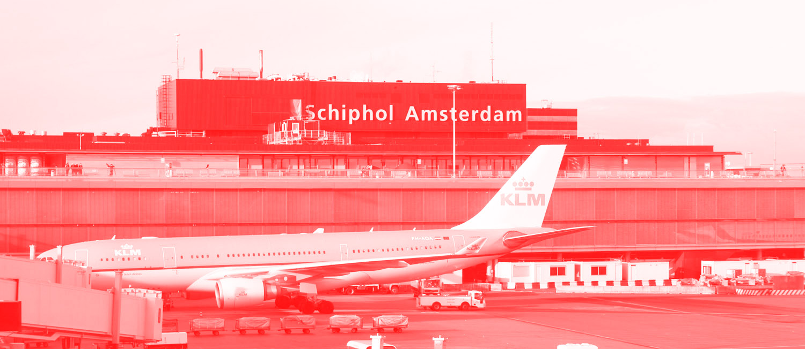
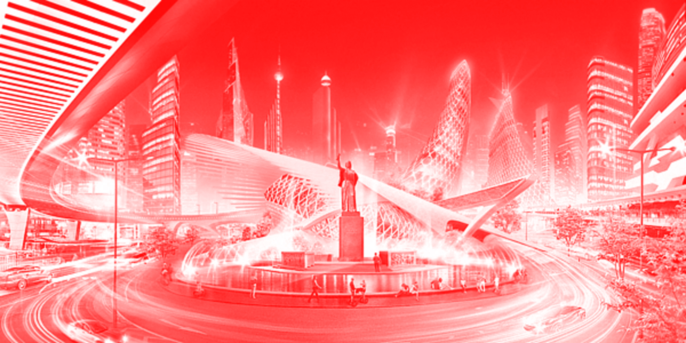

 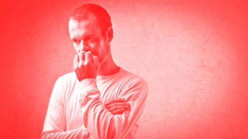
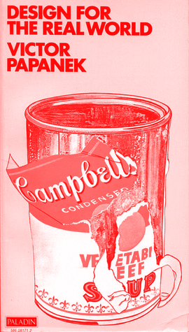
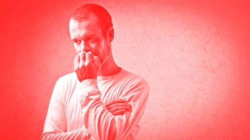
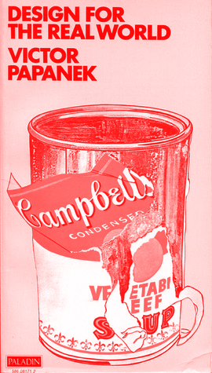


Daniel Van Der Velden — Research and Destroy: Graphic Design as Investigation, 2006
‘Since the production of services results in no material and durable good, we define the labor involved in this production immaterial labor – that is, labor that produces an immaterial good, such as a service, a cultural product, knowledge, or communication.’Does your desire for Dior shoes, Comme des Garçons clothes, an Apple iPod and a Nespresso machine come from need? Is design necessary? Is it credible when a designer starts talking about need, the moment he arrives home from a weekend of shopping in Paris? Can you survive without lifestyle magazines? Can you live without a fax machine that sends an ‘sms’ to the supplier whenever the toner needs replacing? Is it necessary to drive a car in which, for safety, nearly all the driver’s bodily functions have been taken over by the computer – while the driver, at a cruising speed of 170 kilometres per hour, is lulled to sleep by the artificial atmosphere in his control cabin with tilting keyboard, gesture-driven navigation, television and internet service?
– Toni Negri & Michael Hardt, Empire, 2000.
We no longer have any desire for design that is driven by need. Something less prestigious than a ‘designed’ object can do the same thing for less money . The Porsche Cayenne brings you home, but any car will do the same thing, certainly less expensively and probably just as quickly. But who remembers the first book, the first table, the first house, the first airplane? All these inventions went through a prototype phase, to a more or less fully developed model, which subsequently became design. Invention and a design represent different stages of a technological development, but unfortunately, these concepts are being confused with one another. If the design is in fact the aesthetic refinement of an invention, then there is room for debate about what the ‘design problem’ is. Many designers still use the term ‘problem solving’ as a non defined description of their task. But what is in fact the problem? Is it scientific? Is it social? Is it aesthetic? Is the problem the list of prerequisites? Or is the problem the fact that there is no problem? Design is added value. En masse, designers throw themselves into desires instead of needs. There is nothing wrong with admitting as much. Konstantin Grcic, Rodolfo Dordoni and Philippe Starck are found in Wallpaper boutiques, not in Aldi supermarkets. Unvaryingly, the poorest families – for they are always around – are still living with second hand settees in grey, post war neighbourhoods, in a total absence of design. Orchestration of ‘third world’ design assembled for the cameras cannot escape the image of the world in poverty having to make do without the luxury gadgets that are so typical of contemporary design. The hope that some designers still cherish, of being commissioned to work from the perspective of objective need, is in vain. Design only generates longing. The problem is the problem of luxury.
Graphic design
There is one discipline in which, less than ever before, the definition of the problem and the solution are bound to a scientific, technical, or even just a factual state of affairs. That discipline is graphic design – or visual communications. Even Paul Mijksenaar cannot deny the fact that passengers still manage to find their flights in airports where he did not design the airport signposting. Meanwhile, the letter type that he developed for Amsterdam’s Schiphol Airport is also the airport’s logo. In graphic design, every ‘problem’ is coloured by the desire for identity on the part of the client. They are the problems and the solutions of the game of rhetoric, expectations and opinions. The graphic designer, therefore, has to be good at political manoeuvring. The effect of this depends, among other things, on his position in regard to his client. What has historically come to be referred to as ‘important graphic design’ was often produced by designers whose clients considered them as equals.
See, for example,
Piet Zwart,
Herbert Bayer,
Paul Rand,
Wim Crouweland
Massimo Vignelli,
all designers who worked for cultural organisations as well as for commercial enterprises.
Today, an ‘important graphic design’ is one generated by the designer himself, a commentary in the margins of visual culture. Sometimes the design represents a generous client. More often, it is a completely isolated, individual act, for which the designer mobilized the facilities at his disposal, as Wim Crouwel once did with his studio. It always concerns designs that have removed themselves from the usual commission structure and its fixed role definitions. The designer does not solve the other person’s problems, but becomes his own author.1 As a parallel to this, innovating designers pull away from the world of companies and corporations, logos and house styles. Their place is taken over by communications managers, marketing experts and, for some ten years now, design managers, engaged on behalf of the client to direct the design process. The design manager does what the designers also want to do – determine the overall line. In contrast to the ‘total design’ of the past is now the dispirited mandate of the ‘look and feel’ – a term that catches designers in the web of endless manipulating of the dimensions of form, colour and feeling.
It is not so strange that a branch of graphic design has evolved that no longer hangs around waiting for an assignment, but instead takes action on its own accord. It has polarized into the ‘willing to work’, who often have little or no control over their own positions, and the ‘out of work’, who, with little economic support beyond re-channelled subsidies or grants, work on innovation for the sake of innovation.
Designing as factory work
In the NRC Handelsblad newspaper, Annette Nijs, cultural spokesperson for the VVD (People’s Party for Freedom and Democracy), wrote, ‘We are making a turn, away from the assembly line to the laboratory and the design studios, from the working class to the creative class’ (estimates vary from 30% to 45% of the professional population)2.According to a study by the TNO, the Netherlands 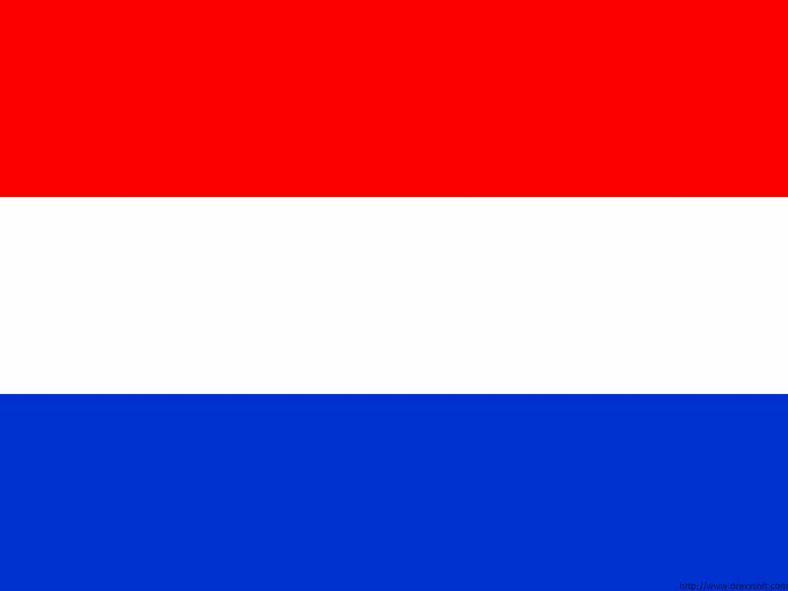 Organization for Applied Scientific Research, the major portion of economic worth derived from design
(about 2.6 billion Euros in 2001) is from visual communications.3 Can a designer, if he is in fact seen by the VVD politicianas the successor to the factory worker, still encompass the strategic distinction that
Alvin Lustig,
Milton Glaser,
Gert Dumbar,
Peter Saville and
Paula Scher
made in the meeting rooms of their respective clients? Is a designer someone who thinks up ideas, designs, produces and sells, or someone who holds a mouse and drags objects across a computer screen? If designers are labourers, then their labour can be purchased at the lowest possible price. The real designer then becomes his own client. Emancipation works two ways. Why should designers have the arrogance to call themselves author, editor in chief, client and initiator, if the client is not allowed to do the same? Only the price remains to be settled, and that happens wherever it is at its lowest. Parallel developments here find their logical end: the retreat of the innovative designer away from corporate culture and the client’s increasing control over the design.
Designing and negativity
In recent years, the graphic designer has shown himself as – what has he not shown himself to be? Artist, editor, author, initiator, skilful rhetorician, architect4. The designer is his own client, who, like Narcissus, admires himself in the mirror of the design books and magazines, but he is also the designer who does things besides designing, and consequently further advances his profession. The ambition of the designer always leads beyond his discipline and his official mandate, without this above-and-beyond having a diploma or even a name of its own. Still, it is remarkable that design, as an intrinsic activity, as an objective in itself, enjoys far less respect than the combination of design and one or more other specialisms. A pioneering designer does more than just design – and it is precisely this that gives design meaning.
Willem Sandberg was a graphic designer, but he was also the director of the Amsterdam Stedelijk Museum (for which he did his most famous work, in the combined role of designer and his own client). Wim Crouwel was a graphic designer, but also a model, a politician, stylist and later, also a museum director. Is the title of ‘designer’ so specific that every escape from it becomes world headlines? No, it is not that. The title is not even regulated: anyone can call himself a designer. It is something else. The title of ‘designer’ is not specifically defined, but negatively defined. The title of designer exists by way of what it excludes. Designers have an enormous vocabulary at their disposal, all to describe what they are not, what they do not do and what they cannot do.
Beatrice Warde, who worked in-house for the Monotype Corporation when she wrote her famous epistle,
The Crystal Goblet
impressed on designers the fact that their work is not art, even though today it is exhibited in almost every museum.5 Many a designer’s tale for a client or the public begins with a description of what has not been made. In the Dutch design magazine, Items, critic
Ewan Lentjes wrote that designers are not thinkers, even though their primary task is thorough reflection on the work they do6. Making art without making art, doing by not doing, contemplating without thinking: less is more in die Beschränkung zeigt sich der Meister; kill your darlings. Add to this, the long-term obsession with invisibility and absence. Sometimes it is self-censorship, sometimes disinterest, but it is always negative. The cause is undoubtedly deference or modesty. Designers often consider themselves very noble in their through-thick-and-thin work ethic, their noblesse oblige. Graphic design is still not developing a vocabulary, and hence has not begun developing an itinerary to deepen a profession that has indeed now been around for a while. This became very clear in October of 2005, when the book presentation for Dutch
Resource took place in Paris,
at an evening devoted to Dutch design, organized by the
Werkplaats Typografie in Arnhem, who published the book. The French designers who attended praised ‘typography at this level’, as though it were an exhibition of flower arrangements, whereas the entire textual content of the book had been compiled by the designers at Werkplaats Typografie, and there was more to speak about than just the beautiful letter type. At the presentation, it was this search for depth and substance for which there was no interest and most of all, no vocabulary. One attending master among the Parisian designers, who rose to fame in the 1970s and 1980s, did not have a good word to say about the design climate and the ever-increasing commercialization. He dismissed out of hand a suggestion that this could be referred to as a ‘European’ situation. Although commercialization is a worldwide phenomenon, for him, the fight against it was specifically French.
Design as knowledge
Despite the interesting depth in graphic design, its vocabulary is made up of negative terms. This frequently turns meetings of more than three practitioners of this noble profession into soporific testimonies of professional frustration. The dialectic between client and designer, the tension between giving and taking and negotiating is threatened with extinction, because both designer and client avoid the confrontation. The former becomes an autonomous genius and the latter an autocratic ‘initiator’ for freelancers offering their services. We have already talked about need. Instead of giving the wrong answers, design should instead begin asking interesting questions. In the future, design might have to assume the role of ‘developer’if it wants to be taken seriously. The Netherlands still enjoys a grants system. Internationally, things are not so rosy. Denying this fact would be the same as saying, ‘I have enough money , so poverty does not exist’. The market conditions that are beginning to seep into the Netherlands,
France
and the rest of Europe
are already the norm for the rest of the world. Consequently, the knowledge economy – the competitive advantage, according to Annette Nijs, the VVD politician – will quickly become a thing of the past, if holding a mouse proves cheaper in Beijing  than in the west of Holland
.
than in the west of Holland
.
The true investment is the investment in design itself, as a discipline that conducts research and generates knowledge – knowledge that makes it possible to seriously participate in discussions that are not about design. Let this be knowledge that no one has asked for, in which the designer is without the handhold of an assignment, a framework of conditions, his deference, without anyone to pat him on the shoulder or upbraid him. Let the designer take on the debate with the institutions, the brand names or the political parties, without it all being about getting the job or having the job fail. Let designers do some serious reading and writing of their own. Let designers offer the surplus value, the uselessness and the
of their profession to the world, to politics, to society.
But do not let designers just become walking encyclopaedias, adorned with such titles as ‘master’, ‘doctor’ or ‘professor’, their qualifications dependent on a framed certificate hanging on the wall. Let there be a design practice in which the hypothesis – the proposal – has higher esteem than need and justification. In 1972, for the catalogue for the exhibition, Italy
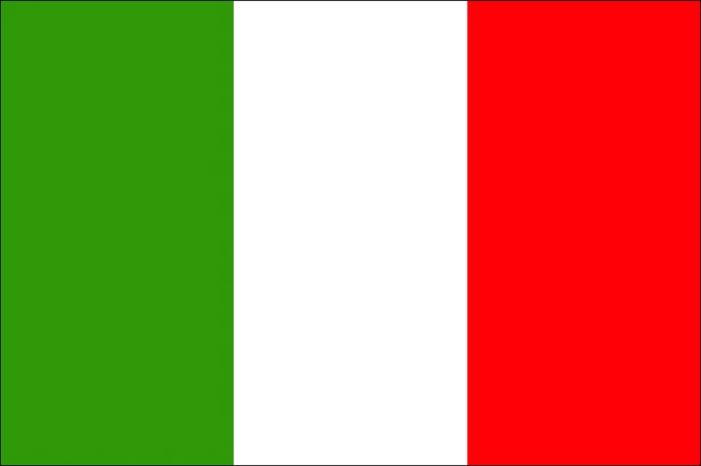: The New Domestic Landscape, at the Museum of Modern Art in New York, Emilio Ambasz wrote about two contradictory directions in architecture: ‘The first attitude involves a commitment to design as a problem-solving activity, capable of formulating, in physical terms, solutions to problems encountered in the natural and socio-cultural milieu. The opposite attitude, which we may call one of counter-design, chooses instead to emphasize the need for a renewal of philosophical discourse and for social and political involvement as a way of bringing about structural changes in our society’7. With the removal of need and the commissioned assignment as an inseparable duo, the door is open to new paths. The designer must use this freedom, for once, not to design something else, but to redesign himself.
1. See also Camiel van Winkel, Het primaat van de zichtbaarheid, NAi Publishers, 2005, p. 177.
2. NRC Handelsblad, 9 February, 2006
3. The TNO report, Vormgeving in de Creatieve Economie, January, 2005, can be found at www.premsela.org.
4. From the jury report for the 2003 Rotterdam Design Award: ‘More or less all the positions that designers have taken in recent years have passed revue: the designer as artist, the designer as technocrat, the designer as editor, as director, as a servant for the public cause, as comedian, as critic and as theorist.’
5. Beatrice Warde, The Crystal Goblet or Printing Should be Invisible, 1955.
6. Ewan Lentjes, ‘Ontwerpers zijn geen denkers’, in Items 6, 2003.
7. Lang, Peter, ‘Superstudio’s Last Stand, 1972-1978’, in Valentijn Byvanck, (ed.), Superstudio: The Middelburg Lectures, Zeeuws Museum, 2005, p. 46.
 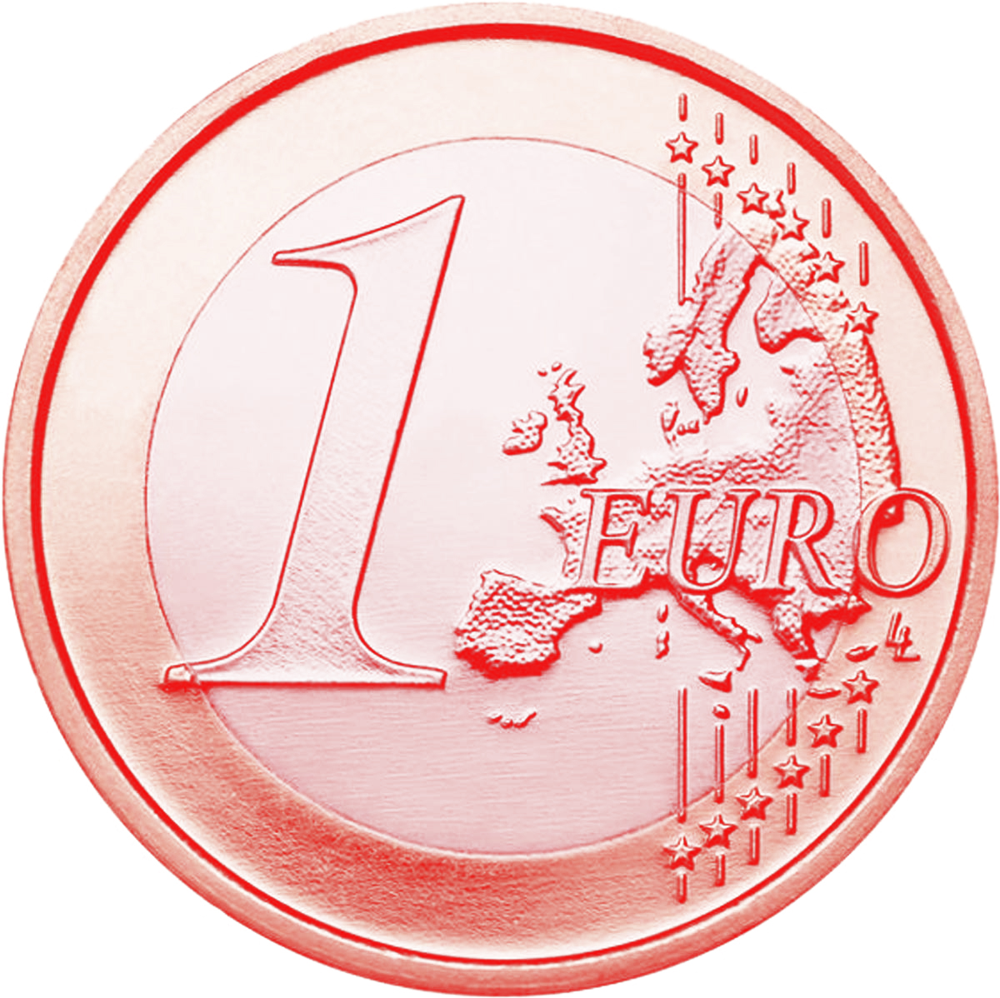
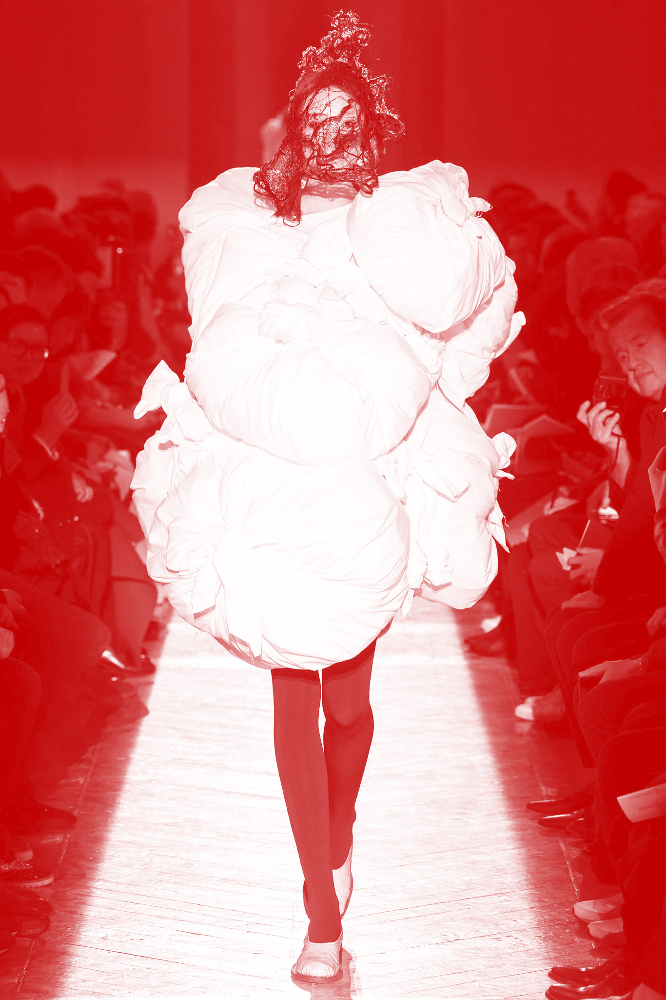
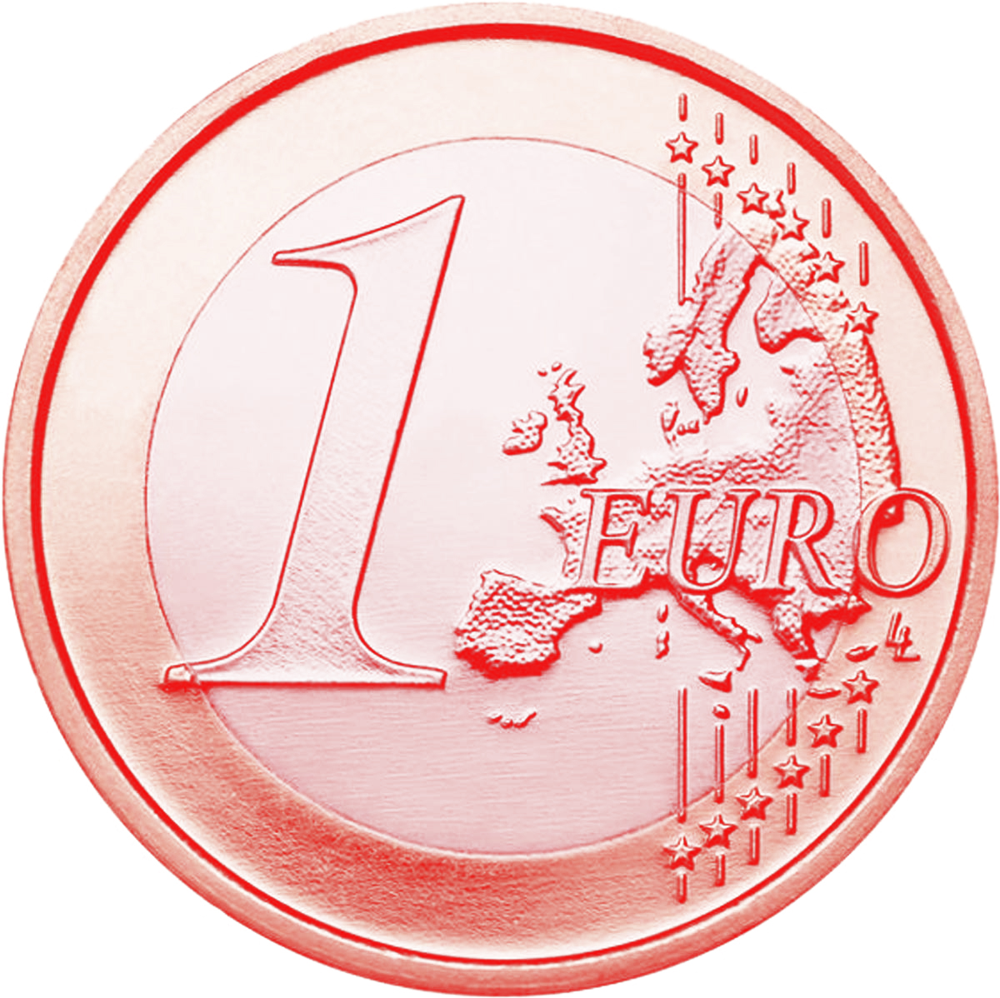
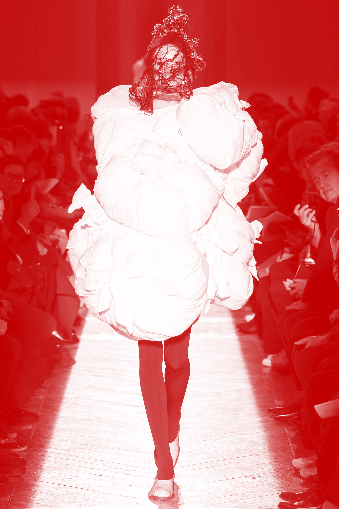


 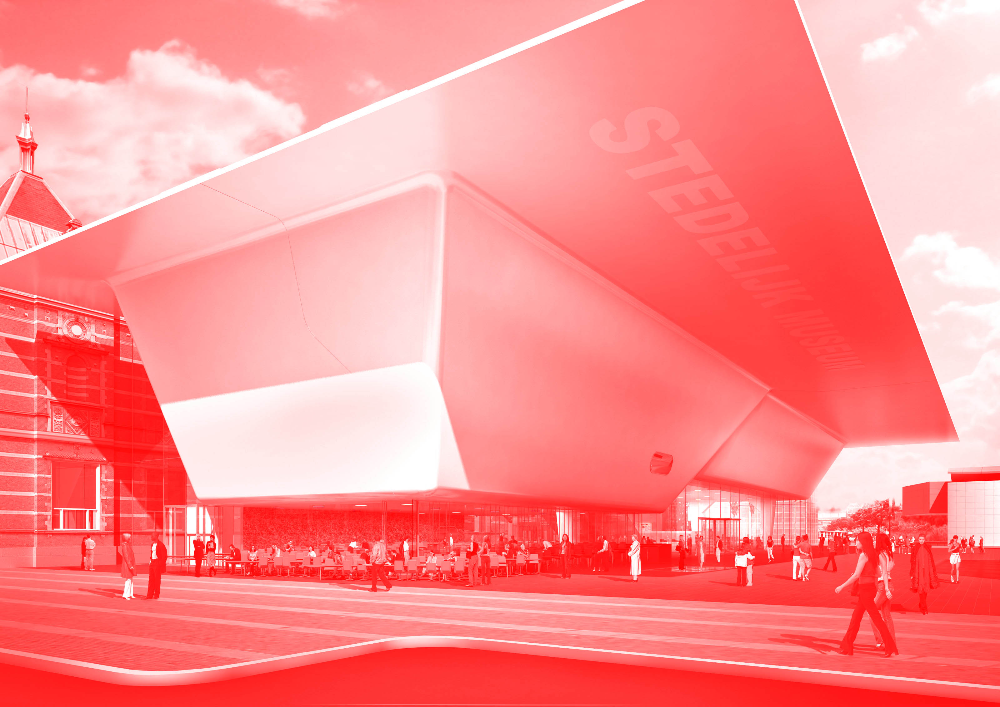
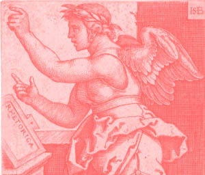
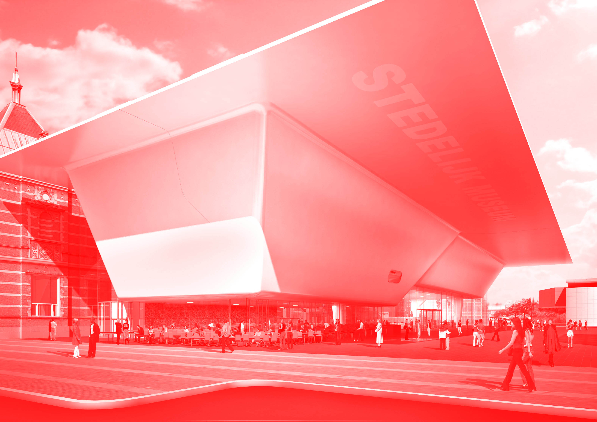
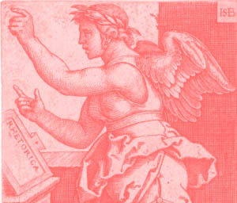


 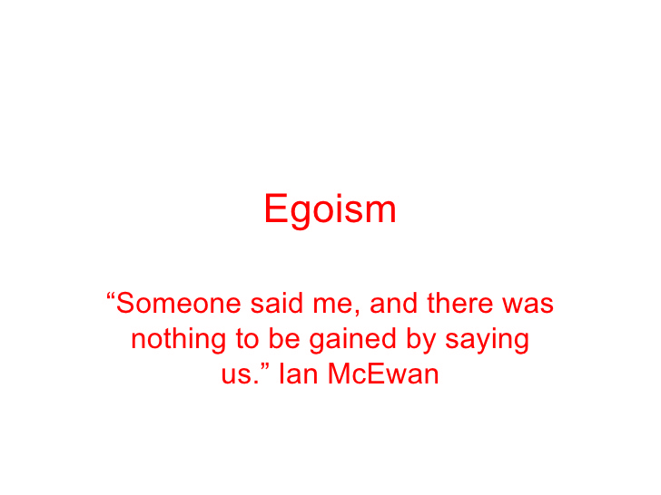
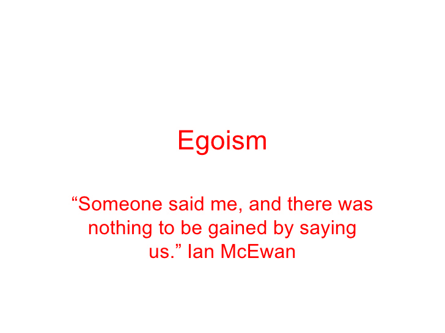
 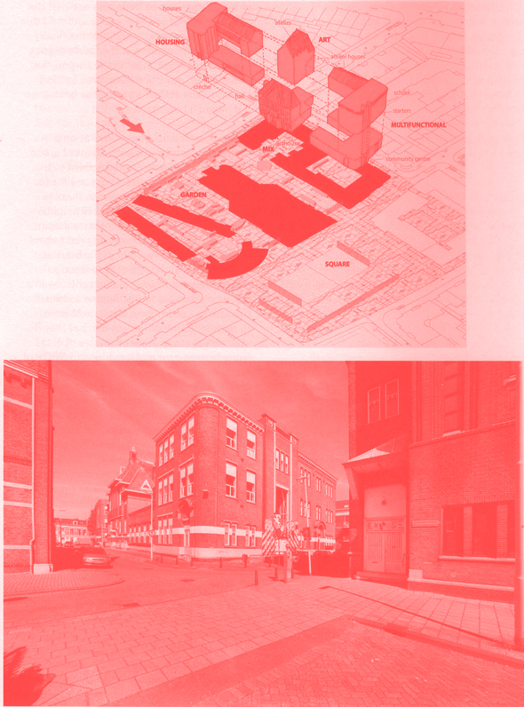
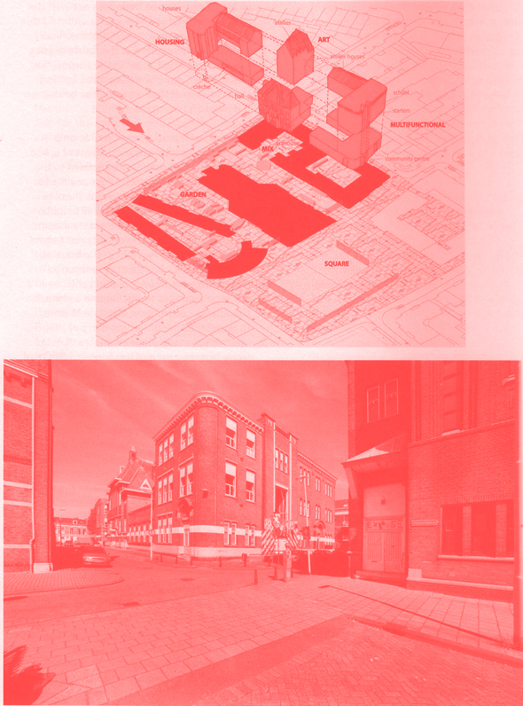


 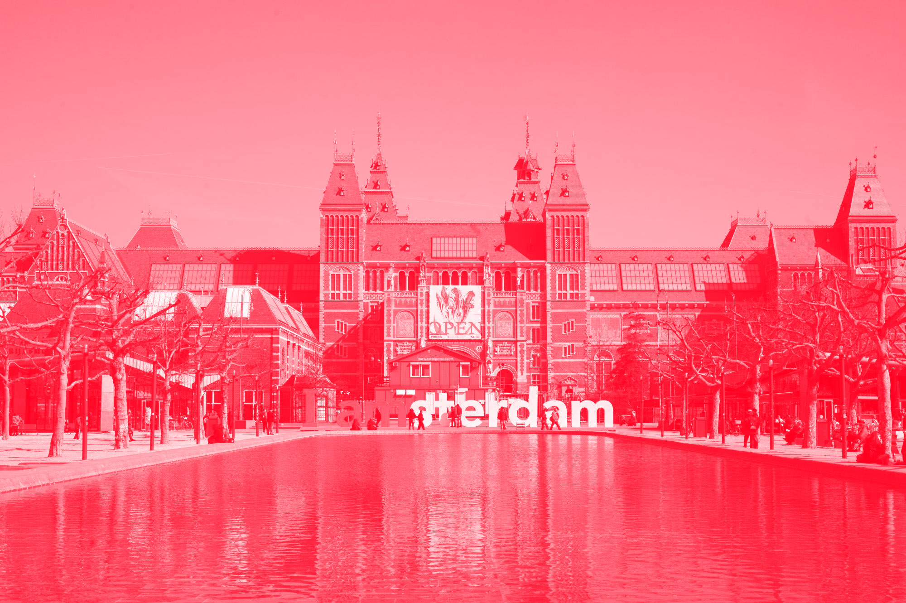
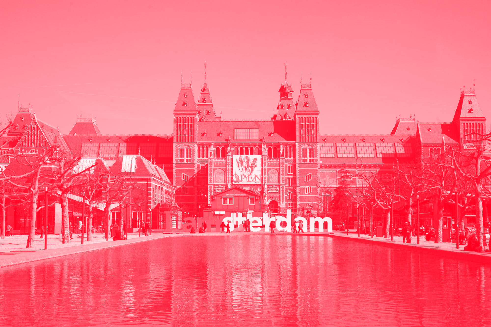


 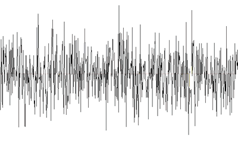
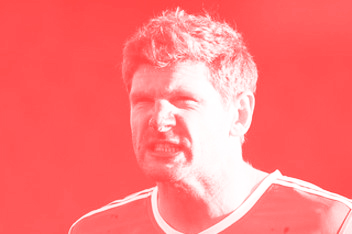
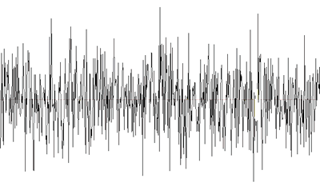
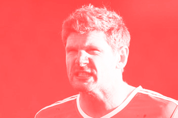